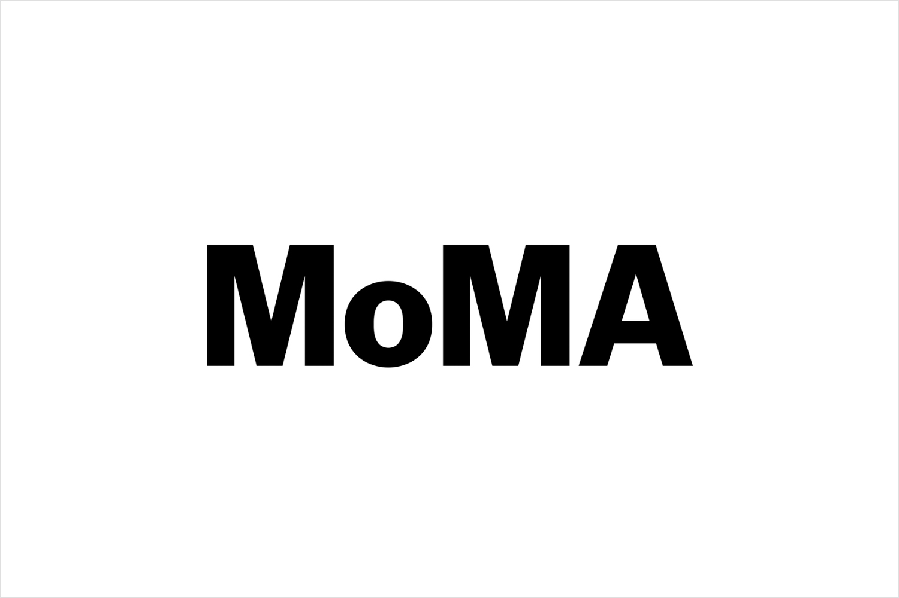
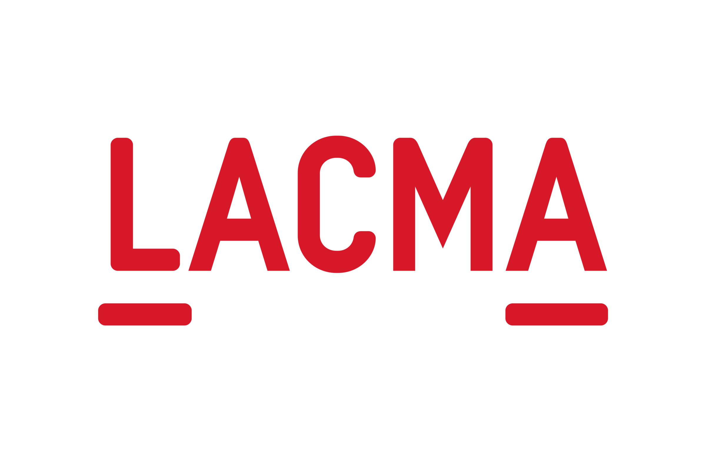

🌟 Resources for Parents & Teachers 🌟
There are many diverse art museums around the country that contain art of different materials, different styles, and from different time periods. Here is a list of a few of our favorite museums and the most popular types of art they have there.
Art4Kidz Favorite Art Museums |
|||
| Art Institute of Chicago | Chicago, IL | Impressionism, Post-Impressionism, Japanese Woodblock Prints (Ukiyo-e) | |
| Museum of Modern Art | New York, NY |  |
Abstract Expressionism, Cubism, Surrealism |
| Los Angeles County Museum of Art | Los Angeles, CA |  |
Modern, Contemporary, Latin American & Pre-Columbian, Japanese & East Asian |
| Guggenheim Museum | New York, NY | Abstract Expressionism, Impressionism, Post-Impressionism | |
| Smithsonian American Art Museum | Washington, D.C. | 19th-Century American Landscape Painting, American Folk, 20th-Century American Modernism & Realism | |
| Museum of Fine Arts | Boston, MA | Japanese & East Asian Art, French Impressionism, 18th- & 19th-Century American Art | |